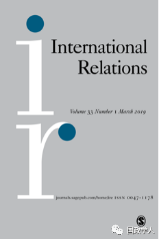

收录于合集
简 介
【作者】 Or Rosenboim ：伦敦城市大学国际政治系现代史讲师。2014—2017年，在剑桥大学皇后学院(Queens’College)和剑桥大学政治与国际研究学院(Department of Politics and International Studies at Cambridge University)担任研究员。主要研究兴趣为二十世纪国际思想史。她最近出版的著作包括《全球主义的出现：英美世界秩序展望》(The Emergence of Globalism: Visions of World Order in Britain and United States, 1939-1950)(2017)
【 编译】 金 琳
【校对】 杨艺华
【审核】 刘瑛琛 李代霓
【来源】
https://journals.sagepub.com/doi/10.1177/0047117819840803, First Published April 9, 2019
【期刊】 《国际关系》（International Relations），是国际关系领域的顶尖期刊之一。与大卫·戴维斯纪念研究所(David Davies Memorial Institute)联合出版编辑。 其2017年影响力因子为1.172，在“国际关系”类别的85种期刊中排名第43位。

国家、权力和全球秩序
State, Power and Global Order
Or Rosenboim
内容提要
通过梳理国际关系学者在国家和全球范围内想象和解释空间与政治关系的相关观点，本文将 政治空间 （global political spaces）的概念作为国际关系中的一个解释框架，而“民族国家（nation- state）”和“全球（global）”则是“政治空间”的两个空间分析范畴。
作者认为， “政治空间”为国际关系的进一步理论化提供了一个分析视角，通过政治空间可以观察到国际关系中政治、物质和象征性权力场所等因素，并分析它们的相互作用形式。
文章导读
**1
**
****对于政治空间的解读 ****
在过去的两个世纪中，“政治空间”概念的重要性对国际关系学者来说不言而喻。政治空间可以被理解为政治和象征关系的广泛动态网络，这一网络在自然地理环境和陆地景观之内、周围或与其互动中发展。“政治空间”的概念体现了政治与地理疆域保持联系的多种方式。政治和地理疆域之间的关系不是被动的或确定性的；空间条件可以界定政治秩序，反之，政治权力也塑造政治空间。
本文主要 考察 了 两类政治空间 ： 民族国家和全球 。 这两类政治空间在美国和英国国际思想中具有概念上和政治上的重要性。在上个世纪，民族国家和全球被国际思想家视为国际思想的重要维度。另外，作者通过将民族国家和全球政治空间二者并列，试图发现在二十世纪的世界秩序中权力的概念化进程及其定位。在研究方法方面，作者主要采取历史分析法，通过考察阿尔弗雷德·齐默尔恩、芭芭拉·沃德、汉斯·摩根索、爱德华·卡尔和约翰·赫兹等国际关系思想家是如何利用各种方式在国家和全球范围内想象和解释空间与政治二者间的关系。了解空间范畴，特别是民族国家和全球在世界秩序中的作用，既可以扩大我们的历史知识，也可以为提升当代国际理论解释力与批判国际关系的空间范畴提供更为清晰的概念工具。
**2
**
****国际关系中的平等与发展
**作者认为 “国家的政治空间”和“全球政治空间”这两个概念是通过分裂、互动和联系获得其政治意义，对于二者分裂的关注有助于理解国家和全球政治空间的权力运作方式。**在 这一视角下，民族国家和全球的政治空间在各种权力位置交叉的竞争空间中呈现出层次性、复杂性和多元性。作者以经济学家、全球思想家芭芭拉•沃德为例，分析了沃德如何看待“平等”概念产生全球空间和国家空间二者分裂的。
1962年，沃德在她的畅销书《富国与穷国》(The Rich Nations and The Poor Nations)中，基于对国际领域“平等”的思考，提出了一种经济发展方法。沃德认为，时代的驱动力之一就是人们认为自身应当与他人平等，这种平等是不区分阶级、性别、种族和国家的。而平等的概念应当与沃德所定义和推广的“发展”概念一同理解。同时，尽管书名将国家作为国际秩序的政治主角，但沃德邀请她的读者在全球范围内衡量政治行动。在一个以非殖民化和冷战进程为定义的时代中，她提出的平等的思维方式即“革命性”的男女平等思想也就是民族平等思想，这意味着“现代民族主义的根源”引起了巨大的反响。
沃德关于国家与全球空间关系的研究主要有如下贡献：首先，沃德强调平等在政治和经济方面的中心地位，这一思想在理论和实践两个层面上为整个发展研究领域的出现铺平了道路。并且促进了关于全球发展的体制讨论，使得1972年的联合国人类环境会议上将国家倡议同全球改革联系起来。其次，沃德使用了“发展”和“平等”这两个概念来反映国家空间和全球空间秩序内部和二者之间的紧张关系。在她看来，单一民族国家只在其境内实现繁荣和增长是不够的；国家之间和各大洲之间的不平等也应通过国家主导的旨在创造繁荣、和平与增长的倡议加以解决。
**3
**
结 论
通过分析总结20世纪的国际关系学者对于空间和政治的想象和解释，作者认为政治空间的概念为本世纪学者的研究提供了可利用的分析视角。但是自1919年以来，全球空间就被认为是对两种明显矛盾的趋势的回应，这两种趋势分别是技术进步侵蚀了国家权力与国家意识形态结构增强了国家权力。如何解决这两种趋势之间的矛盾？全球图景对国家空间而言究竟是“催命符”还是“救命药”？不同于当下学者简单地将规范性目标定义归为“国家性”或“全球性”，20世纪的国际关系学者在这两个领域密切互动的基础上，寻求推进空间解释。在回顾历史的基础上，作者认为，在未来， 国际关系学者应继续研究国家空间和全球空间的重叠动态。政治空间视角要求我们对世界秩序中权力的复杂性持开放态度，并对世界政治的多重空间形象进行动态的批判性审视。
**
**
** 官网下载：** C ity Research Online
http://openaccess.city.ac.uk/21112/
_ ** _ 本文由国政学人平台独家编译首发**
更多阅读
【重磅推荐】巴里·布赞：英国学派视角下的中国崛起 | 国政学人
【重磅速递】米尔斯海默：注定失败：自由主义国际秩序的兴衰 | 国政学人
【美国研究】IS杂志：为何美国的外交大战略如此稳定？| 国政学人
【英国脱欧】以欧盟为核心的多中心外交：脱欧后英国的欧洲外交战略 | 国政学人
【民族主义】江忆恩：中国的民族主义正在高涨吗？基于对北京群众的调查 | 国政学人
国政学人 （ID：guozhengxueren)
为方便学人及时阅读高质量文章
别忘把国政学人设置 星标 哦~